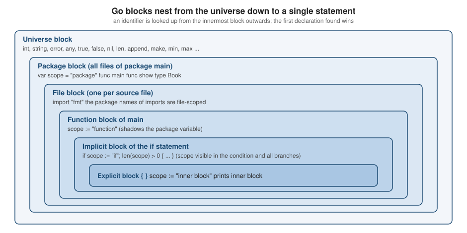

Program Structure and Lexical Elements
|
This content was generated with the assistance of AI and should be verified against the official documentation before being relied on in production. |
This page is written against Go 1.27 (go1.27.2), checked on 2026-10-18. It explains how the compiler reads a Go source file — from the bytes of the file to tokens, declarations and blocks — and how a finished program starts and stops. Everything here is specified by the "Lexical elements", "Blocks", "Declarations and scope" and "Program initialization and execution" sections of the language specification; the page links to the exact anchors. The examples use the shelf library-catalogue scenario that the rest of this section builds on, and every one of them was compiled, vetted and run with Go 1.27.2.
Go’s lexical grammar is deliberately small: 25 keywords, a handful of operators, no preprocessor and no header files. Two rules surprise newcomers more than any others — the compiler inserts semicolons for you, and exported names are decided by the case of their first letter. Both are explained below.
Source files and packages
A Go program is made of packages, and a package is made of the .go files in one directory. Every source file has the
same three-part shape, in this order:
-
the package clause, which names the package the file belongs to;
-
zero or more import declarations;
-
zero or more top-level declarations of constants, types, variables and functions.
// Command shelf prints a greeting for the library catalogue.
package main
import (
"fmt"
"os"
)
const appName = "shelf"
var version = "0.1.0"
type Book struct {
Title string
}
func describe(b Book) string {
return fmt.Sprintf("%s: %q", appName, b.Title)
}
func main() {
fmt.Println(describe(Book{Title: "Dune"}), "version", version)
if len(os.Args) > 1 {
fmt.Println("arguments:", os.Args[1:])
}
}$ go run . a b
shelf: "Dune" version 0.1.0
arguments: [a b]Points worth knowing about this structure:
-
The package clause is mandatory and is not a declaration, so it does not take part in scope rules. All files in a directory must use the same package name (the only exception is the
_testsuffix of external test packages, see Testing). The name_is not allowed. -
Imports come before every other declaration, and an import that is not used is a compile error (see below). The package name an import introduces is scoped to the file, not the package. Import forms (alias, dot, blank) and the rules of
initare detailed in Packages, Imports and Initialization. -
After the imports, declarations may appear in any order. Unlike C, a function can be used above the line that defines it, and package-level variables are initialized by dependency, not by position (see Program initialization and execution).
-
A file may start with a build constraint such as
//go:build linux. It must come before the package clause and be followed by a blank line; it is a directive, not an ordinary comment. Build constraints replaced the older// +buildform in Go 1.17. -
The file name has no meaning to the language, but the
gotool uses suffixes:_test.gomarks test files and_linux.goor_arm64.goconstrain a file to a platform. -
Source text is Unicode encoded as UTF-8. A leading byte order mark is ignored; the NUL character and a BOM anywhere else are rejected.
Two everyday compile errors belong to this structure. Go refuses to build a file that imports a package it does not use, and it refuses a local variable that is never used:
package main
import (
"fmt"
"os"
)
func main() {
count := 3
fmt.Println("shelf")
}# example.com/shelf
main.go:5:2: "os" imported and not used
main.go:9:2: declared and not used: countgo vet reports the unused variable too, because the type checker is shared. Treat both as a feature: the compiler
keeps the dependency list and the code honest. When you are experimenting, _ = count silences the error (see
The blank identifier), and an editor with gopls or goimports adds and removes imports automatically.
A top-level name can be declared only once per package. Redeclaring it, or using := when no new variable would be
created, is also an error:
package main
import "fmt"
type Book struct{ Title string }
var Book = "dune"
func main() {
a, b := 1, 2
a, b := 3, 4
fmt.Println(a, b)
}# example.com/shelf
main.go:7:5: Book redeclared in this block
main.go:5:6: other declaration of Book
main.go:11:7: no new variables on left side of :=The main package and func main
A package named main that declares a function main with no parameters and no results is an executable command.
go run and go build turn it into a program; any other package name produces a library that other packages import.
Both halves of the rule are enforced:
$ go build -o /dev/null . # package main, but no func main
# example.com/shelf
runtime.main_main·f: function main is undeclared in the main package
$ go run . # package shelf with a func main: a library, not a program
package example.com/shelf is not a main packageThe main function takes no arguments and returns nothing. Command-line arguments are in os.Args (index 0 is the
program name), and the exit status is set with os.Exit, not with a return value. The flag package and the
structured approach to commands are covered in
Command-Line Programs.
Program initialization and execution
Before main runs, the runtime initializes the program in a fixed order:
-
packages are initialized one at a time, each only after all the packages it imports; the dependency order is derived from the import graph and each package is initialized once, however many packages import it;
-
inside a package, package-level variables are initialized in declaration order, except that a variable is initialized only after the variables it depends on (the dependency analysis follows references through functions);
-
then every
initfunction runs in the order the compiler is given the files (thegotool sorts file names), and within a file in source order. A file may declare severalinitfunctions, and they cannot be called or referenced; -
finally
main.mainis called.
package main
import "fmt"
var (
a = c + b // initialized last: depends on b and c
b = f() // initialized after d, because f refers to d
c = 1 // initialized first: no dependencies
d = 3 // initialized before b, although declared after it
)
func f() int {
fmt.Println("f called, d =", d)
d++
return d
}
func init() {
fmt.Println("init #1:", a, b, c, d)
}
func init() {
fmt.Println("init #2: a file may declare several init functions")
}
func main() {
fmt.Println("main starts")
}f called, d = 3
init #1: 5 4 1 4
init #2: a file may declare several init functions
main startsThe program ends when main returns — immediately. Goroutines that are still running are abandoned, and no pending
defer of another goroutine runs. os.Exit ends the program at once with the given status and skips the deferred
calls of the calling goroutine too:
package main
import (
"fmt"
"os"
)
func run() error {
defer fmt.Println("run: deferred call runs on return")
return fmt.Errorf("catalogue is empty")
}
func main() {
if err := run(); err != nil {
fmt.Fprintln(os.Stderr, "shelf:", err)
defer fmt.Println("main: this deferred call is skipped by os.Exit")
os.Exit(2)
}
}run: deferred call runs on return
shelf: catalogue is empty
exit status 2(exit status 2 is printed by go run; a compiled binary just exits with code 2.) A common structure is therefore a
tiny main that calls run() error, prints the error and calls os.Exit exactly once. An unrecovered panic in any
goroutine also terminates the whole program, with status 2 and a stack trace. See
Error Handling and
Goroutines and the Scheduler.
Source: os: Exit
Comments and directives
There are two forms of comment, both with C syntax: // runs to the end of the line, and /* ... */ runs to the closing
marker and does not nest. A comment that spans lines acts like a newline, a single-line one acts like a space. Comment
markers inside string, rune and raw-string literals are just characters.
// Command comments shows the three kinds of comment.
package main
import "fmt"
/*
A block comment that contains a newline acts like a newline,
a block comment on one line acts like a space.
*/
// Greet returns the greeting. Doc comments start with the name they document.
func Greet(name string) string {
return "hello, " + /* inline */ name // line comment
}
//go:noinline
func answer() int { return 42 } // a directive has no space after the slashes
func main() {
fmt.Println(Greet("shelf"), answer())
s := "a /* not a comment */ b" // comment markers inside strings are literal
r := `// nor here`
fmt.Println(s, r)
}hello, shelf 42
a /* not a comment */ b // nor hereThree conventions sit on top of the syntax:
-
A doc comment is the comment directly above a package, constant, type, variable or function declaration (no blank line between). It starts with the name it describes and is shown by
go docand pkg.go.dev. The syntax — paragraphs, headings, lists, links — is covered in Documentation and Doc Comments;gofmtreformats doc comments since Go 1.19. -
A directive is a line comment that begins
//go:(or//line,//export) with no space after the slashes. The compiler, linker andgotool read them;gofmtleaves them alone and they are not part of doc comments. Examples are//go:build,//go:generate,//go:embedand//go:noinline; they are listed in Directives, Code Generation and Embedding. -
There is no way to comment out code safely with
/* */if the code contains a string with*/; prefer//per line (editors do this with one keystroke).
Tokens and automatic semicolon insertion
The compiler splits the text into tokens: identifiers, keywords, operators and punctuation, and literals (integer, floating-point, imaginary, rune and string). White space — spaces, tabs, carriage returns and newlines — only separates tokens. The formal Go grammar uses a semicolon to end statements and declarations, but programs almost never write one, because the lexer inserts it:
-
When the input is broken into tokens, a semicolon is automatically inserted at the end of a line if that line’s last token is
-
an identifier,
-
an integer, floating-point, imaginary, rune or string literal,
-
one of the keywords
break,continue,fallthroughorreturn, -
one of the operators and punctuation
++,--,),]or}.
-
-
To allow complex statements to occupy a single line, a semicolon may be omitted before a closing
)or}.
The first rule explains every Go layout surprise. Consider the code below, which gofmt accepts, and the places where a
semicolon is inserted:
package main
import "fmt"
// Semicolons are inserted by the lexer; this file shows where.
func main() {
title := "Dune" // a semicolon is inserted after the string literal
total := 1 +
2 // no semicolon after the trailing +, so the expression continues
books := []string{
"Dune",
"Emma", // the trailing comma is required before the newline
}
for i := 0; i < len(books); i++ {
fmt.Println(i, books[i])
}
fmt.Println(title, total)
}0 Dune
1 Emma
Dune 3The consequences are the "style rules" that are really syntax:
-
The opening brace must be on the same line as the
func,if,for,switch,selectortypeit belongs to. If it is on the next line, the line before it ends in)or an identifier and gets a semicolon:package main import "fmt" func main() { fmt.Println("hello") }# example.com/shelf main.go:6:1: syntax error: unexpected semicolon or newline before { -
elsemust be on the same line as the closing brace of theif, for the same reason:package main import "fmt" func main() { n := 3 if n > 2 { fmt.Println("big") } else { fmt.Println("small") } }# example.com/shelf main.go:10:2: syntax error: unexpected keyword else, expected } -
A multi-line composite literal or call needs a trailing comma on its last element, because the last element is followed by a newline and an identifier or literal gets a semicolon there:
package main import "fmt" func main() { books := []string{ "Dune", "Emma" } fmt.Println(books) }# example.com/shelf main.go:8:9: syntax error: unexpected newline in composite literal; possibly missing comma or } -
A binary operator must end the line, not start the next one. Writing the
+at the start of the continuation line leaves a complete statementtotal := 1on the first line, and the second line becomes a separate expression statement that the compiler rejects:package main import "fmt" func main() { total := 1 + 2 fmt.Println(total) }# example.com/shelf main.go:7:3: +2 (untyped int constant 2) is not used -
Method chains break after the dot, not before it, for the same reason. The following compiles and prints
bbnbnb:package main import ( "fmt" "strings" ) func main() { s := strings.NewReplacer("a", "b"). Replace("banana") fmt.Println(s) }
Source: Effective Go: Semicolons
Explicit semicolons are legal and are used in the three-clause for header (for i := 0; i < n; i++), in the
initializer of if and switch (if v, ok := m[k]; ok), and to put several statements on one line. gofmt rewrites
the latter into separate lines, which is why you rarely see them. Because the rules are mechanical, the compiler never
guesses: a missing brace or comma is reported at the line where the unexpected semicolon was inserted, which is
sometimes one line below where you would look.
Bodner presents the semicolon rule inside the chapter on go fmt, and Vivien (ch. 2) lists it with the lexical rules.
Both are right; what changed is the tooling around it. Editors now run gofmt (through gopls) on every save, so
you see the effect of an inserted semicolon immediately instead of at compile time.
Identifiers
An identifier names a variable, constant, type, function, field, method, package, or label. It is a letter followed by letters and digits, where a letter is any Unicode letter (category L) or the underscore, and a digit is any Unicode decimal digit (category Nd). There is no length limit.
package main
import "fmt"
type ISBN string
type 書籍 struct { // a Unicode letter starts an identifier, but it is not exported
題名 string
}
func main() {
π := 3.14159
café := "espresso"
ключ := 7
b := 書籍{題名: "Dune"}
fmt.Println(π, café, ключ, b)
var Ä, ä = 1, 2 // Ä is upper case (Lu) so a package-level Ä would be exported
fmt.Println(Ä, ä)
}3.14159 espresso 7 {Dune}
1 2Unicode identifiers are legal, but the standard library and almost all code bases use ASCII English names so that every
contributor can type and search for them. Identifiers are case-sensitive: Book, book and BOOK are three different
names, and the case of the first letter has a meaning, described in Exported identifiers.
Keywords
Go has 25 reserved words. They cannot be used as identifiers:
|
|
|
|
|
|
|
|
|
|
|
|
|
|
|
|
|
|
|
|
|
|
|
|
|
Using one as a name gives a syntax error at the keyword, followed by a second error because the parser loses its place:
package main
func main() {
var func = 1
_ = func
}# example.com/shelf
main.go:4:6: syntax error: unexpected keyword func, expected name
main.go:6:1: syntax error: unexpected }, expected (Notable absences are while, do, class, this, try, catch, throw, new (that one is a predeclared function,
not a keyword), public and private. Words such as string, len, true or nil are not keywords; they are
predeclared identifiers and can be shadowed (see The universe block and predeclared identifiers). iota, any and
comparable are predeclared too.
Operators and punctuation
The spec lists these tokens as operators and punctuation:
+ & += &= && == != ( )
- | -= |= || < <= [ ]
* ^ *= ^= <- > >= { }
/ << /= <<= ++ = := , ;
% >> %= >>= -- ! ... . :
&^ &^= ~The meaning and precedence of the operators have their own page,
Operators and Expressions. Two of the tokens are lexical
oddities: ` and `--` are *statements*, not expressions (so `x = i is a syntax error), and ~ appears only in type
constraints (see Generics). Literals — numbers with 0b, 0o, 0x prefixes
and _ separators, runes such as 'a', interpreted strings in double quotes and raw strings in backquotes — are
covered in Types and Values and
Strings, Runes and UTF-8.
Blocks and scope
A block is a possibly empty sequence of declarations and statements within matching braces. Go also has implicit blocks, which is what makes its scope rules precise:
-
the universe block encompasses all Go source text;
-
each package has a package block containing all the Go source text for that package;
-
each file has a file block containing the file’s source text;
-
each
if,forandswitchstatement is considered to be in its own implicit block (so a variable declared in theifinitializer is visible in all its branches but nowhere else); -
each clause in a
switchorselectacts as an implicit block; -
a function body, and every explicit
{ ... }, is a block.

The scope of an identifier is the region of source text in which it denotes the declared entity. The rules are:
-
predeclared identifiers have universe scope;
-
an identifier declared at the top level (outside any function) has package scope — visible in every file of the package;
-
the name of an imported package has file scope;
-
a parameter, result or receiver has scope of the function body;
-
a constant or variable declared inside a function begins its scope after the declaration (so
x := x + 1refers to the outerxon the right-hand side), and a type begins its scope at its identifier (so a type can refer to itself); -
a label has function scope, in a namespace of its own.
An identifier declared in an inner block shadows the one in the outer block for as long as the inner scope lasts:
package main
import "fmt"
var scope = "package"
func main() {
fmt.Println(scope) // package
scope := "function"
fmt.Println(scope) // function
if scope := "if"; len(scope) > 0 {
fmt.Println(scope) // if
{
scope := "inner block"
fmt.Println(scope) // inner block
}
}
fmt.Println(scope) // function
show()
}
func show() {
fmt.Println(scope) // package
}package
function
if
inner block
function
packageShadowing is legal, and sometimes the point (the if v, ok := m[k]; ok idiom), but it hides the classic bug of using
:= where = was meant. The inner n below never touches the outer n, the program compiles only if the inner value is
used, and the compiler reports the unused one:
package main
import (
"fmt"
"strconv"
)
func main() {
var n int
if s := "42"; len(s) > 0 {
n, err := strconv.Atoi(s) // := declares new n and err in the if block
if err != nil {
fmt.Println(err)
}
}
fmt.Println(n)
}# example.com/shelf
vet: main.go:11:3: declared and not used: n(go build prints the same message without the vet: prefix.) If the inner variable is used — for example passed to a
function — the bug compiles silently and the outer variable stays zero. The standard go vet does not include the
shadow analyzer because it reports many intentional uses; it is available in golang.org/x/tools and through
golangci-lint, and is described in
Formatting, vet, fix and Static Analysis. The
variables-constants-and-iota page returns to the declaration rules of var and := in detail
(Variables, Constants and iota).
Bodner (ch. 4) devotes a section to blocks and shadowing and recommends the shadow analyzer; that advice is still
sound. What changed is the loop variable: the v := v copy that deliberately shadowed it before a goroutine or closure
is no longer needed, because since Go 1.22 each iteration of a for loop has its own variable in modules that declare
go 1.22 or later.
Uniqueness and labels
A name may be declared only once in a given block, and function parameters and results are in the function’s outermost
block, so func f(n int) { var n string } is a redeclaration error. Method names and struct field names live in their own
namespaces and may repeat the name of a package-level identifier. Labels (for goto, break and continue) are
declared only for the function body, are used only by those statements, and a declared label that is never used is a
compile error (label L defined and not used).
The universe block and predeclared identifiers
The universe block holds the identifiers the language provides without an import:
| Kind | Identifiers |
|---|---|
Types |
|
Constants |
|
Zero value |
|
Functions |
|
Because these are identifiers and not keywords, any block may redeclare them. That is allowed and almost always a mistake:
package main
import "fmt"
func main() {
len := 3 // shadows the builtin len
true := false
nil := 0
fmt.Println(len, true, nil)
// fmt.Println(len("abc")) would not compile now: len is an int variable
}3 false 0Shadowing string, error, copy, len, max or min is the usual way this goes wrong, in particular because the
set has grown: any and comparable arrived with generics in Go 1.18, and min, max and clear in Go 1.21. Code
written before then (and both reference books were) may use min or max as the name of its own helper functions or
variables. That code still compiles, since the new names are in the universe block and are shadowed by package-level
declarations, but it is a candidate for deletion in favour of the builtins. The linters predeclared and revive
(redefines-builtin-id) flag the shadowing.
The blank identifier
The underscore _ is the blank identifier. It can be used like any identifier in a declaration, but it declares
nothing and its value can never be read. It has four common roles:
package main
import (
"fmt"
"io"
"strings"
)
type Store interface{ Len() int }
type memStore struct{ n int }
func (m *memStore) Len() int { return m.n }
// Compile-time proof that *memStore implements Store.
var _ Store = (*memStore)(nil)
func main() {
_, err := io.Copy(io.Discard, strings.NewReader("Dune")) // ignore the byte count
fmt.Println("err:", err)
for range 2 { // no loop variable needed
fmt.Print("*")
}
fmt.Println()
for _, title := range []string{"Dune", "Emma"} { // ignore the index
fmt.Println(title)
}
}err: <nil>
**
Dune
Emma-
discard a result you do not need (
_, err := ...,_ = xto silence an "unused" error while debugging); -
skip an index or value in
for ... range; with Go 1.22for range nneeds no variable at all; -
assert at compile time that a type implements an interface (
var _ Store = (*memStore)(nil)), which costs nothing at run time; -
import a package only for its side effects (
import _ "embed"or a database driver); the full rules are in Packages, Imports and Initialization.
It also names unused function parameters and receivers (func (*memStore) Close() error), and it is how a method set
is checked in tests. Note that _ may appear several times in one declaration list, and that _ = err does not make a
swallowed error acceptable: handle it, or document why it is ignored.
Exported identifiers
Go has no public or private keyword. Visibility across packages is decided by the first character of the name: an
identifier is exported if its first character is a Unicode upper-case letter (category Lu) and it is declared in the
package block or is a field or method name. Everything else is visible only inside its own package. The unit of
encapsulation is therefore the package, not the type — two types in the same package see each other’s unexported fields.
// Package catalog holds the shelf domain types.
package catalog
// Book is exported: its name starts with an upper-case letter.
type Book struct {
Title string // exported field
isbn string // unexported field, visible only inside package catalog
}
// New returns a Book. Only code inside the package can set isbn directly.
func New(title, isbn string) Book { return Book{Title: title, isbn: isbn} }
// ISBN is a getter: no "Get" prefix.
func (b Book) ISBN() string { return b.isbn }
func normalize(s string) string { return s }From another package, the exported names work and the unexported ones do not exist:
package main
import (
"fmt"
"example.com/shelf/catalog"
)
func main() {
b := catalog.New("Dune", "9780441013593")
fmt.Println(b.Title, b.ISBN())
// fmt.Println(b.isbn) // compile error, see below
// fmt.Println(catalog.normalize("x"))
}Dune 9780441013593Un-commenting the last two lines fails to compile:
main.go:11:16: b.isbn undefined (type catalog.Book has no field or method isbn)
main.go:12:22: undefined: catalog.normalizePractical consequences:
-
Renaming an identifier from
lowertoUpperchanges the public API of the package; do it deliberately. -
Characters without a case (Chinese, Japanese,
_) are never upper case, so a name starting with them is never exported. Wrap it in an English-named exported function if it must be visible. -
Fields that
encoding/json,reflectand templates need to see must be exported: those packages live in other packages and cannot read an unexported field. This is the most common reason a struct "serializes to `{}`". -
The
internaldirectory adds a second visibility level between "package" and "everyone", enforced by thegotool (see Packages, Imports and Initialization).
Naming conventions
The language fixes the rules above; the community fixes the rest, and the standard library is the model. The authoritative texts are Effective Go ("Names"), the wiki page "Go Code Review Comments" and the blog post "Package names".
| Element | Convention | Example |
|---|---|---|
Package |
Short, lower case, one word, no underscores or mixed case; the name is the last element of the import path; avoid |
|
Exported / unexported |
MixedCaps and mixedCaps; never |
|
Initialisms |
Keep a consistent case: all upper ( |
|
Getters and setters |
The getter is the field name without |
|
Interfaces |
One-method interfaces take the method name plus |
|
Receivers |
One or two letters, the same on every method of the type; not |
|
Errors |
Sentinel variables begin |
|
Scope length |
Short names for short scopes ( |
|
Stutter |
The package name is part of the qualified name, so do not repeat it |
|
Files |
Lower case, words joined with underscores; suffixes |
|
package main
import (
"fmt"
"net/url"
)
// ISBN is an initialism, so it stays upper case; compare Isbn or Id.
type ISBN string
// Book keeps the field names short and the initialisms consistent.
type Book struct {
ID int
Title string
isbn ISBN
}
// ISBN is the getter for the unexported isbn field: no Get prefix.
func (b Book) ISBN() ISBN { return b.isbn }
// SetISBN is the setter: the Set prefix is kept.
func (b *Book) SetISBN(v ISBN) { b.isbn = v }
// Names that read well at the call site: strings.Builder, bytes.Buffer, url.URL.
type HTTPClient struct{ baseURL *url.URL }
func main() {
var b Book
b.SetISBN("9780441013593")
userID := 42 // initialism in the middle: lower-case first word, then ID
fmt.Println(b.ISBN(), userID, HTTPClient{}.baseURL == nil)
}9780441013593 42 trueSource: Effective Go: Names
Underscores appear only in file names, test names such as TestStore_Lend, cgo, and generated code. The reason behind
the short-names rule is that Go code is read far more often than written, and a name’s length should be proportional to
the distance between its declaration and its last use. Vivien (ch. 2) and Bodner (ch. 2 and 4) both give this advice, and
both remain current. Additional guidance on package names is in the blog post and in
Idioms, Style and Code Review.
Source: The Go Blog: Package names
Source: Go Wiki: Code Review Comments
gofmt: one style for everyone
Go ends style debates with a tool. gofmt rewrites source into the canonical layout: tabs for indentation, spaces for
alignment, a fixed placement of braces and spacing around operators, sorted imports within a block, and aligned comments
and struct fields. The go fmt command runs gofmt -l -w over the packages you name. Because the format is
mechanical, diffs contain only real changes and code from any author looks the same.
package main
import "fmt"
func main() {
x := 1; y := 2
if x<y {fmt.Println( "less" )}
}$ gofmt -l .
main.go
$ gofmt -d main.go
--- main.go.orig
+++ main.go
@@ -3,6 +3,9 @@
import "fmt"
func main() {
- x := 1; y := 2
- if x<y {fmt.Println( "less" )}
+ x := 1
+ y := 2
+ if x < y {
+ fmt.Println("less")
+ }
}Source: cmd/gofmt
The flags to remember are -l (list files whose formatting differs), -d (print a diff), -w (write the result back) and
-s (apply safe simplifications such as for _ = range x to for range x and []T{T{}} to []T{{}}). Spacing
you see in expressions — x + y*z — is gofmt showing operator precedence, not a stylistic choice. Line length is
not enforced; the usual advice is to break lines at natural boundaries rather than at a limit. Continue with
Formatting, vet, fix and Static Analysis for
goimports, go vet, go fix and the linters, and with
Getting Started for the first run of the tools.
Source: Effective Go: Formatting
Where the books are outdated
The lexical rules of the language have been stable since Go 1.0, so Bodner (ch. 1, 2 and 4) and Vivien (ch. 2) remain accurate on semicolons, identifiers, scope and the blank identifier. The things to adjust when you read them:
-
Predeclared identifiers. Both books predate
anyandcomparable(1.18) and the builtinsmin,maxandclear(1.21); the set above is the current one. Theprintandprintlnbuiltins exist for bootstrapping and should not be used in programs — usefmtorlog/slog. -
Loop-variable scope. Advice to copy the loop variable (
v := v) so closures capture a fresh value predates Go 1.22, which made the variable per-iteration for modules withgo 1.22or later ingo.mod. -
Build constraints. The
// +buildform is replaced by//go:build(1.17);gofmtrewrites old lines. -
Workspace layout. Source organised under
$GOPATH/srchas been replaced by modules; a package’s import path now starts with the module path fromgo.mod(see Modules and Dependency Management). -
Doc comments. Their syntax was formalised in Go 1.19 and
gofmtnow reformats them; the oldergolintrecommendations quoted in the books are no longer maintained — usego vet,goplsandstaticcheckinstead. -
Range clauses.
for range n(integers, 1.22) and range over functions (1.23) did not exist;_in a range clause is still the way to skip a value.
References
-
The Go Programming Language Specification: Lexical elements (comments, tokens, semicolons, identifiers, keywords, operators and punctuation)
-
Source file organization, Package initialization and Program execution
-
Effective Go (Formatting, Semicolons, Names)
-
Vladimir Vivien, Learning Go Programming (Packt Publishing, 2016)